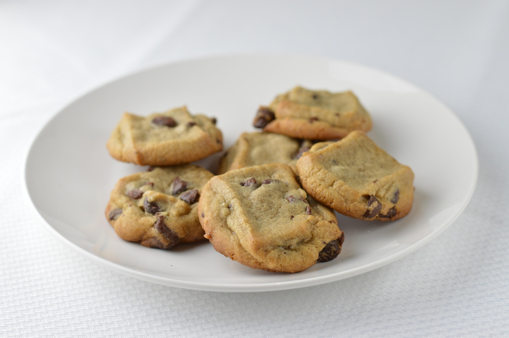
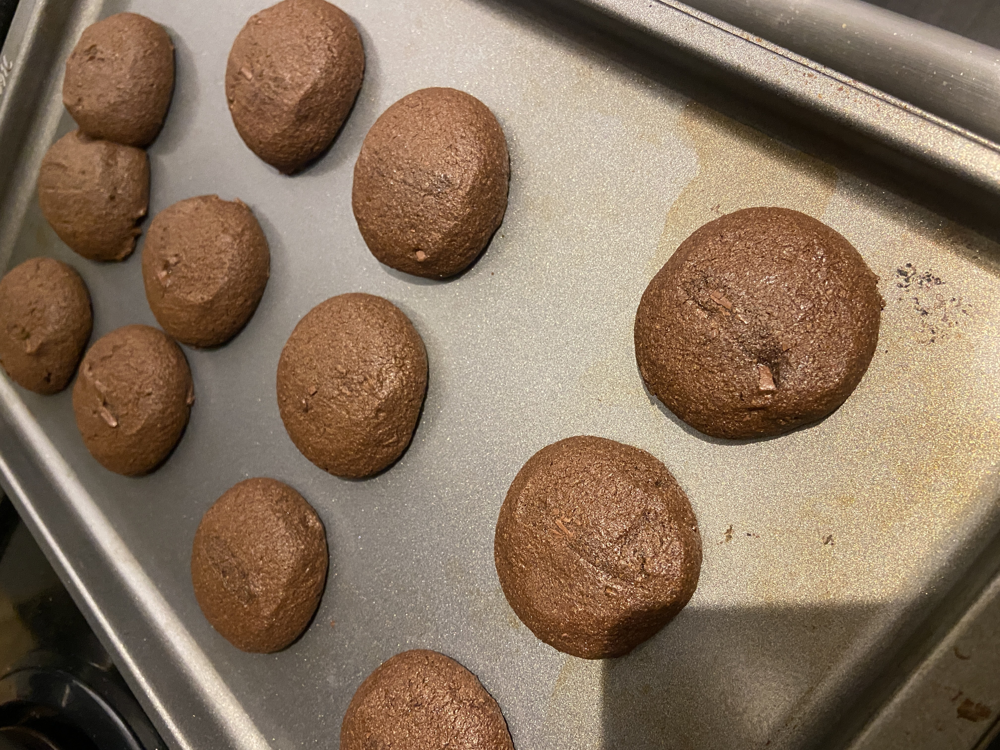

Gluten-Free Chocolate Chip Cookies
Ingredients
- 2 ¼ cups gluten-free 1:1 baking flour (with xanthan gum)
- ½ tsp baking soda
- ½ tsp salt
- ¾ cup unsalted butter, softened (or melted & cooled for chewier cookies)
- ¾ cup brown sugar (packed)
- ½ cup granulated sugar
- 2 large eggs (room temperature)
- 2 tsp vanilla extract
- 1 ½ cups chocolate chips
Instructions
- Preheat oven to 350°F. Line baking sheet with parchment paper.
- Whisk together flour, baking soda, and salt.
- In another bowl, cream butter and both sugars until fluffy (2–3 minutes).
- Add eggs one at a time, then mix in vanilla.
- Mix in dry ingredients until just combined.
- Fold in chocolate chips.
- Scoop 2 tablespoon portions onto tray, leaving space between each.
- Bake about 11 minutes until edges are golden and centers look slightly underdone.
- Let rest on pan 5 minutes before transferring. Cookies will set as they cool.

Gluten-Free Double Chocolate Chip Cookies
Ingredients
- 2 cups gluten-free 1:1 baking flour
- ½ cup unsweetened cocoa powder
- 1 tsp baking soda
- ½ tsp salt
- ¾ cup butter (softened)
- 1 cup brown sugar
- ½ cup granulated sugar
- 2 eggs
- 2 tsp vanilla
- 1 ½ cups chocolate chips (semi-sweet or dark)
Instructions
- Preheat oven to 350°F.
- Whisk together flour, cocoa powder, baking soda, and salt.
- Cream butter and sugars until fluffy.
- Add eggs and vanilla; mix well.
- Mix in dry ingredients until combined.
- Fold in chocolate chips.
- Scoop dough onto baking sheet.
- Bake about 11 minutes.
- Cool on tray before transferring.
